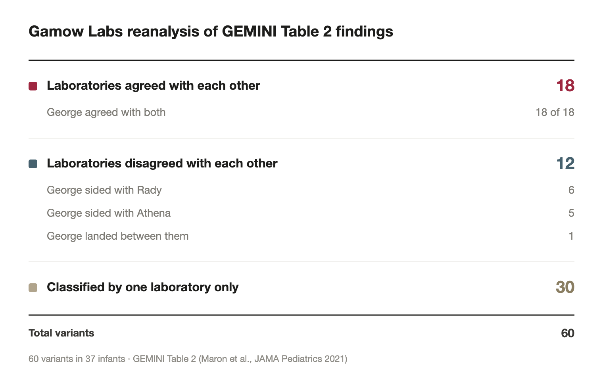
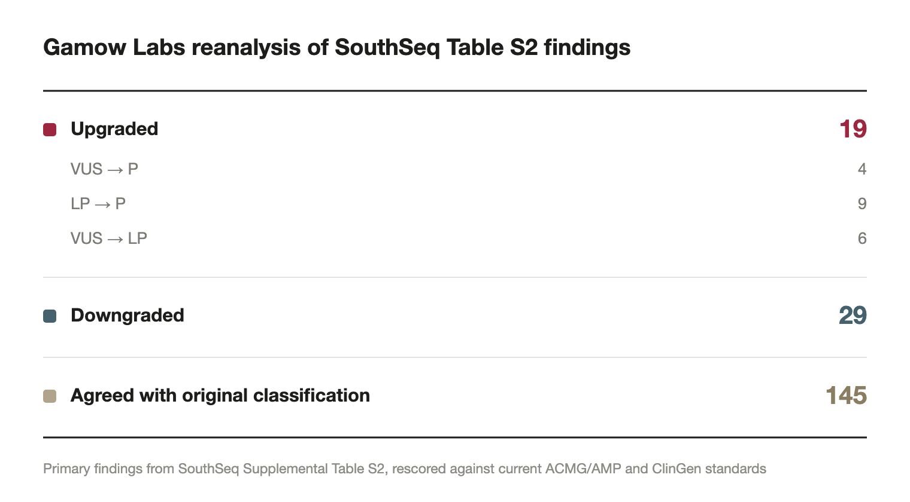

When a variant classification happens on someone’s genome, it’s a snapshot of what was knowable that day. Obviously with time, the evidence underneath it keeps moving. ClinVar continues accumulating submissions, ClinGen updates dosage curations, expert panels issue calls that supersede everything below them, or the classification rules themselves get revised. All the while, the variant classification stays static, unless someone goes in by hand to re-run and publish new findings.
At Gamow Labs, we are in pursuit of building a “living diagnosis” for patients. Our idea is that the genome is read once, but with new science and published findings, the diagnosis updates accordingly. With this approach, we hypothesize that correctly harnessed AI agents can perform genetic disease re-interpretation at or above human performance.
Variant reanalysis is a good test of our thesis, because it is high-volume, low-priority yet genuinely valuable, and because almost nobody does it at scale. It is exactly the kind of work that gets deferred indefinitely when it has to be done one variant at a time, by hand, by someone who could otherwise be seeing active patients.
To start this test, we recently reanalyzed cases from GEMINI, which compared genome interpretation between two clinical laboratories, and SouthSeq, a large genomic sequencing study of infants with suspected genetic disease in the Southeastern United States.
We took the published case-level findings from both and revisited them with George-0.1, our own rare disease diagnosis agent.
For GEMINI, we found agreement with both laboratories on all 18 variants where they concurred. On the 12 where they did not, George matched one lab’s call 11 times (six with one, five with the other), and landed between them once.
For SouthSeq, we found 19 upgrades, including several VUS → Pathogenic reclassifications. We also found pathogenic findings that should be downgraded, a VUS that became likely benign, and surprisingly numerous places where the original evidence was either unavailable, inconsistently applied, or did not support the stated classification.
Initial review of the papers
GEMINI
The original GEMINI study enrolled 113 infants across six children’s hospitals beginning in July 2019: Tufts Medical Center, Rady Children’s, UPMC Children’s, Mount Sinai Kravis, North Carolina Children’s and Cincinnati Children’s. Eligibility required hospitalization under one year of age with a suspected, undiagnosed genetic disorder; infants born before 23 weeks’ gestation, with major congenital infection, or with a genetic diagnosis already explaining their findings were excluded. What makes the cohort unusual is that every infant was tested twice, in parallel: rapid whole genome sequencing at one laboratory, and a targeted 1,722-gene panel at the other.
Diagnostic or uncertain variants came back for 51 of the 113 infants (45%), and 37 (33%) carried a pathogenic or likely pathogenic variant.
GEMINI was a comparison study: the same infants’ genomes were interpreted by two laboratories: Rady Children’s Institute for Genomic Medicine and Athena. The published Table 2 lays out where they agreed and where they didn’t, across 60 variants in 37 infants.
The disagreement rate is the interesting part. On the 30 variants both laboratories classified, they agreed on 18. The other 12 span the full range of consequence: LP against VUS, P against LP, and in one case VUS against Pathogenic on the same allele.
SouthSeq
The original SouthSeq study enrolled 367 infants from 365 families between February 2018 and July 2020, recruiting from NICUs, prenatal clinics and pediatric units. Eligibility required inpatient status within the first year of life with congenital anomalies consistent with a genetic disorder or an unexplained major medical condition. The cohort was intentionally enriched for racial and ethnic minorities and infants from rural and medically underserved communities.
The results made the case for genome sequencing as a first-line test. Definitive or likely diagnostic findings turned up in 30% of infants (109), and another 14% (51) received an uncertain result. Most strikingly, of the diagnostic findings genome sequencing produced, only 43% (43 of 101) were also detected by the clinical genetic testing running concurrently.
SouthSeq performed proband-only sequencing, with parental samples obtained for Sanger confirmation when they were available. That was the right call for a study operating at that scale in that setting, but it means 35% of diagnostic findings have unknown inheritance simply because parental samples weren’t there. Inheritance is paramount in ACMG scoring. For example, a confirmed de novo occurrence is worth up to 8 points, and establishing phase in a recessive case is often the difference between two VUSs and a diagnosis.
The Supplemental Table S2 in the paper lists 202 variants across 160 infants, each with its transcript, its ACMG/AMP classification, the criteria codes behind that classification, and a case-level designation. This was a great, thorough investigation shared with the public and that generosity is the only reason this work was possible.
Our workflow
Our review can be broken down into 5 steps:
- Analyze the papers: rebuild the rulebook as it stands today, and fix our interpretation policy before looking at any case
- Generate synthetic phenotypes (for SouthSeq): since Table S2 carries none, and constrain what they are allowed to prove
- Pull ClinVar at submitter level: separating independent evidence from the reporting laboratory’s own deposit
- Running George-0.1: evidence gathering and variant identity verification
- Score and compare: calculating every case against all 28 criteria
1) Analyze the papers
GEMINI published the final results of their findings, but no indication as to how they came to the classification via the ACMG analysis. Their table gives each variant’s classification from both laboratories and a short reason-for-discordance, including the interpretation, structural variant, gene-level, coverage, filtering.
SouthSeq published its criteria codes. Their table gives the actual codes behind each classification, so we could compare our reasoning against theirs code by code as well as the final interpretation.
Since both of the original studies were conducted, the ACMG rules have evolved. In SouthSeq for our initial analysis, we could already audit a lot of the cases based on the newer guidelines. Three changes account for most of the movement:
- PP5 and BP6 were retired by the ClinGen Sequence Variant Interpretation working group in 2018. Those criteria let you borrow another lab’s classification as evidence. They no longer count.
- PP5 appears on 32 of the 176 finding-rows in Table S2 (SS-3, SS-4, SS-7, SS-10, SS-43, SS-44, SS-45, SS-83, SS-100, SS-102, SS-103, SS-113, SS-114, SS-116, SS-133, SS-153, SS-155, SS-169, SS-175, SS-197, SS-198, SS-201, SS-249, SS-260, SS-271, SS-275, SS-279, SS-282, SS-308, SS-318, SS-321, SS-329).
- PM2 dropped to Supporting. Absence from population databases used to be worth Moderate. Under current SVI recommendations it’s worth 1 point instead of 2.
- ClinGen dosage curation matured. There is now a curated, downloadable answer to “is haploinsufficiency the established mechanism for this gene,” covering thousands of genes. That answer is the gate on PVS1, worth 8 of the 10 points a Pathogenic call requires.
We also fixed our own interpretation policy up front, before scoring anything, so that no decision could be made to fit a result:
- PP4 withheld wherever the disease has more than one causative gene. A phenotype cannot discriminate between a disease’s genes, so it carries no gene-specific information.
- PP3 withheld alongside PVS1 for canonical splice variants (the prediction and the criterion are the same claim made twice).
- PP3 does not apply to in-frame indels. No calibrated predictor exists for them.
- PM1 and PM5 do not stack. Take whichever is better evidenced.
- PS4 needs documented probands, not ClinVar aggregation
- We created this rule based on the GEMINI case where a well-known recurrent variant’s support turned out to be submitter count rather than counted probands.
- Recessive proband evidence routes to PM3, not PS4
- We created this rule based on the GEMINI case where both laboratories reached the same conclusion by different routes.
- PM3 uses the partner allele’s classification excluding the pairing under evaluation. Two VUSs cannot lift each other into LP.
- FDA-recognised ClinGen expert panel calls override the generic rubric
- This was decisive on SouthSeq cases SS-363a, SS-44c and SS-292.
2) Generate synthetic phenotypes (for SouthSeq)
GEMINI publishes each infant’s phenotype. That lets us score phenotype-dependent criteria against real clinical features rather than generated ones.
The original SouthSeq study didn’t include a phenotype for each case. We generated synthetic phenotypes for each case in SouthSeq to accommodate for phenotype-dependent criteria (PP4, PS4, CNV Section 5). This was based on a skill that conditions on sex, age, variant, gene or region, inheritance, variant classification, and disease association. That outputted Generated Synthetic Phenotype, Generated Synthetic HPO and Generated Synthetic Limitations. We also made it clear in our analysis that this was a generative phenotype that makes the output deliberately incomplete, more explicitly that the absence of a feature is not evidence of absence.
This made PP4 interesting: the disease name is an input to the phenotype generator. So we needed to avoid circular evidence (phenotype was derived from the disease, used as evidence for the disease, meaning PP4 would be worth +1 on most rows and move tiers). Applying it would inflate the entire sheet. So we established the following policy:
| Generated data | PP4 calculation |
|---|---|
| Synthetic phenotype present, limitations permit | Scored, flagged synthetic-derived |
| Synthetic phenotype present, limitations constrain it | Reduced or withheld, citing the specific limitation |
| No synthetic phenotype on the row | Always 0, “no phenotype available,” explicitly not a mismatch |
We wrote a function to fail any row scoring PP4 above zero without the limitation, so a scored PP4 could never later be misread as resting on clinical data. The same process was applied to PS4 and to CNV Section 5.
3) Pull ClinVar at submitter level
For nearly every case in SouthSeq, the table included ClinVar SCV. We pulled every finding’s record at submitter level, and sorted the submissions into three piles:
- Independent evidence: other laboratories that reached a classification on their own data
- The reporting laboratory’s own deposit: HudsonAlpha’s SCV, which is the same claim as the sheet, not a corroboration of it
- Circular citations: external submissions whose supporting reference is PMID 34930662, the SouthSeq paper itself
With this stage we discovered that on roughly 11 findings, an external laboratory’s submission cites the SouthSeq publication as its evidence. Counting that as independent support means the study corroborating itself through a third party.
The GEMINI table lacks this information, so every variant had to be resolved to its ClinVar record from gene and HGVS alone. That is an extra step and an extra error surface (and it is the reason the identity verification in step 4 runs first). Similarly to SouthSeq, for GEMINI we isolated both Athena and Rady before scoring anything, and excluded PMID 33587123 wherever it appeared.
4) George-0.1: Evidence gathering and variant identity verification
Now that we had our guardrails established, it was time to run George. George-0.1 first gathers primary evidence for every case from Ensembl (coordinates, transcript structure, CDS mapping), gnomAD v4 (population frequency, gene constraint), ClinVar via NCBI E-utilities (submission-level records), UniProt (domain and functional-site annotation), ClinGen dosage curation (haploinsufficiency and triplosensitivity), and VEP with the loss-of-function plugin and calibrated missense predictors.
From there we re-derived every variant’s identity from scratch.
5) Score each case and compare
With our analysis complete we scored every finding against the ACMG/AMP criteria using the Tavtigian point system with ClinGen SVI’s current combining rules. Every finding was then hand-checked by members of our technical staff and reviewed with the original publishers of the study.
Results
In our final report, most classifications agreed. Even still, we had some noteworthy upgrades and findings.
GEMINI

As we stated before, the two laboratories agreed on 18 cases. When we ran our analysis, George also agreed on those 18, which tells us that our scoring is anchored where expert consensus already exists.
Of the 12 variants where the two laboratories contradicted each other, George agreed with Rady 6 times and with Athena 5 times. The remaining case is interesting: PROKR2 c.563C>T (p.Ser188Leu), Rady called VUS and Athena called Pathogenic, and George landed at Likely pathogenic, with a note that the relative information, in silico and functional evidence could push it in either direction.
Diving into the upgrades
![Table of the 8 of 60 GEMINI variants where George upgraded the reported classification. Athena had already called five pathogenic that Rady called likely pathogenic, and George agreed with Athena on all five: KMT2D c.9265dup, ACAD9 c.253C>T, ACAD9 c.1552C>T, NPHS1 c.1745_1749del and NPHS1 c.2931T>G, scoring 11 to 14 points. Two moved past both laboratories, COQ2 c.590G>A and HDAC8 c.110G>A, each called likely pathogenic by Rady, unreported by Athena, and pathogenic by George. One landed between the two: PROKR2 c.563C>T, VUS to Rady and pathogenic to Athena, likely pathogenic to George at 6 points.](assets/gemini-upgrades.png)
Measured against Rady’s reported calls alone, George moved eight variants up, seven of them from Likely pathogenic to Pathogenic. That looks aggressive until you check the next column over: five of those seven are variants Athena had independently classified as Pathogenic.
Only two upgrades move past both laboratories: COQ2 c.590G>A and HDAC8 c.110G>A. Our own note on the HDAC8 case flags that biological parentage was never confirmed in the record; if it wasn’t, the de novo criterion doesn’t hold at full strength and the variant drops back to 9 points and Likely pathogenic.
SouthSeq

A majority of our SouthSeq analysis showed consensus with the original report. But there were a notable amount of upgrades that were thematically similar.
The largest single driver was that PVS1 never applied to a clear null variant (an 8-point omission). Nonsense, frameshift or canonical-splice changes scored on PM2 alone, or PM2 + PP3, in genes where loss of function is the established mechanism. Given that 34% of SouthSeq’s diagnostic variants were nonsense, frameshift or splice-site changes, this one gate accounts for a lot of movement.
Three other patterns showed up repeatedly:
- PP4 became scoreable under our policy, where the disease has a single causative gene and the generated phenotype’s limitations permitted it.
- Strength assignments set too low. PS2 was raised from Moderate to Strong where a full trio confirmed de novo status. PM5 was raised to Strong where four other pathogenic substitutions exist at the same residue.
- We discovered new evidence sitting in the public record but not counted. Published functional studies (SS-110b, SS-97), documented proband literature (SS-162, SS-110b, SS-329), and a PM3 that the maternal/de-novo split makes available (SS-113b).
Our largest differentiation beyond the classification was actually which criteria applied in the ultimate scoring.
Interesting cases where VUS → Pathogenic
SS-110b, CLCNKB c.1312C>T, p.(Arg438Cys) 10 points, Pathogenic.
ClinVar has held this Pathogenic under a four-digit accession, VCV 7593, across multiple submitters with no conflicts. Two published electrophysiology studies show it damages chloride channel function → PS3 +4. Described in multiple families → PS4_Moderate +2. p.Arg438His at the same residue is independently Pathogenic → PM5 +2. The sheet called it a VUS.
SS-176a and SS-176b, DHCR24 c.1480C>T p.(Arg494Ter) and c.1241_1242insAGTCC p.(Phe415fs) 12 points each, Pathogenic.
The original scored PM2 + PP4 on both and never applied PVS1 or PM3 to a nonsense allele sitting in trans with a second null, trio-confirmed, in a recessive disorder whose phenotype the child has. Two pathogenic nulls in trans, matching phenotype, in the only gene for that disease, thus the case should not read “Uncertain.”
Observations on quality issues
A case study of this size being compiled by hand yielded some quality issues and inconsistencies. Sometimes an error in the summation of the ACMG score, or a typo in the codes caused an inaccurate classification. This can be crucial for future references, and is worth us to call out. Additionally, consumer chatbots doing a similar analysis, these issues could yield incorrect output. Fortunately, George-0.1 was able to catch these errors before we ran the analysis.
A clear example of this was SS-48, which was originally labeled as 0.30, Pathogenic. The original’s own codes totalled 0.15, which is already VUS by the framework’s own thresholds, while the classification field said Pathogenic.
Another example is in case SS-326. The zygosity field reads “homozygous” while its copy number reads ×1. Those cannot both be true, and which one is right decides whether an asymptomatic infant is a carrier or has a pre-symptomatic diagnosis of progressive neurodegeneration.
The cleanest illustration needs no external data at all. SS-162 and SS-279 are the same TFAP2A variant in two different patients, sharing one ClinVar accession in two versions. The row with more evidence (confirmed de novo, PS2 applied) was called Likely pathogenic. The row with less, proband-only, was called Pathogenic. Based solely on the calculations of this table, these rows are conflicting.
As a final example, there were several where the arithmetic doesn’t reach its own label. Eight rows carry a total that lands in a different tier than the classification field states: four CNVs (2.20 called Likely pathogenic; 0.15, 0.55 and 0.60 each called Pathogenic) and four sequence variants totalling 4 or 5 points under current combining rules while labelled LP or Pathogenic.
There were several other minor errors in the sheet that were caught by George-0.1 which we are actively addressing with the original clinical team.
Caveats
We worked from a published supplemental table, not from the sequencing data. Where the table is ambiguous, we made a documented assumption. Our phenotypes are synthetic, which is why every phenotype-dependent criterion in our output is either flagged as such or withheld.
These are reclassifications that exist in silo. They are not clinical re-reports, and nothing here changes a patient’s record. To do that would require the originating laboratory, with access to the primary data, which we at Gamow Labs do not have.
We see this reanalysis as a baseline for what clinicians can build off of for future reclassifications. This is entirely based on public data using the agentic reasoning of George-0.1.
Come work on this
The bottleneck in genomic medicine is not sequencing. It’s the time to interpret, and the reanalysis that should follow.
If you have read this far and find this work interesting, we would love to chat with you, check out our careers page.
And if you’d rather just watch what we do next: subscribe to the newsletter.